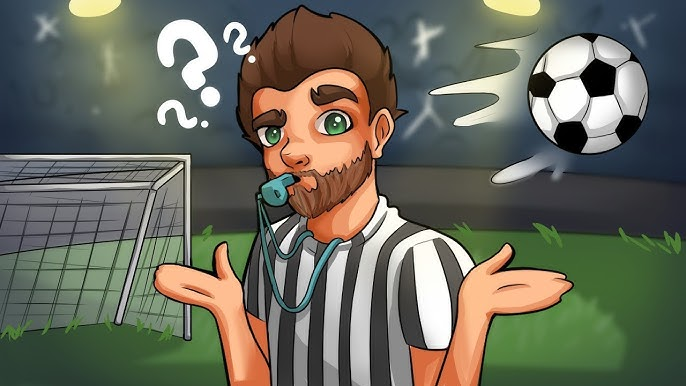

A Foci Eredete

A labdarúgás, vagy ahogy világszerte ismerik, a foci, a világ egyik legnépszerűbb sportja. Bár a modern értelemben vett foci szabályai Angliából származnak a 19. század közepéről, maga a játék sokkal régebbi gyökerekkel rendelkezik.
Már az ókori Kínában is játszottak egy hasonló labdajátékot, amelyet „Cuju”-nak hívtak, és katonai kiképzés részeként is használták. Hasonló játékokat játszottak az ókori Görögországban, Rómában és más kultúrákban is.
A modern labdarúgás 1863-ban vált hivatalos sportággá, amikor Angliában megalakult az első futballszövetség, és lefektették a játék egységes szabályait. Ettől kezdve a sport gyorsan elterjedt világszerte, és mára több milliárd rajongót tudhat magáénak.
A foci nemcsak egy sport, hanem kulturális és társadalmi jelenség is, amely embereket hoz össze a világ minden tájáról.
Alapvető Szabályok
A labdarúgás egy 11 fős csapatokkal játszott sport, amelynek célja, hogy a labdát az ellenfél kapujába juttassák. A mérkőzést egy bíró vezeti, aki felügyeli a szabályok betartását.
- Játékidő: Egy mérkőzés 90 percig tart, két 45 perces félidőre osztva.
- Gól: Gól akkor születik, ha a labda teljes terjedelmével áthalad a gólvonalon.
- Les: Lesállás akkor van, ha az ellenfél a labda elrugasanak pillanataban hatrebb van mint az utolso elotti vedekezo jatekos(az utolso altalaban a kapus).
- Szabálytalanságok és büntetések: A bíró szabad- vagy büntetőrúgást ítélhet.
Top 5 Futball Liga Európában
| Liga | Híres Csapatok | Jellemző |
|---|---|---|
| La Liga (Spanyolország) | Real Madrid, Barcelona, Atlético Madrid | Technikás játék, nagy múltú klubok |
| Premier League (Anglia) | Manchester United, Chelsea, Arsenal | Fizikai játék, szoros bajnokság |
| Serie A (Olaszország) | Juventus, AC Milan, Inter Milan | Taktikus játék, erős védekezés |
| Bundesliga (Németország) | Bayern München, Borussia Dortmund | Gyors, támadó foci |
| Ligue 1 (Franciaország) | PSG, Olympique Marseille | Fiatal tehetségek, PSG dominanciája |
A Bajnokok Ligája

A Bajnokok Ligája a legrangosabb európai klubfutball-torna. Története 1955-re nyúlik vissza, amikor még „BEK” néven indult. A legjobb klubcsapatok mérkőznek meg a kontinens bajnoka címért.
Bajnokok Ligája hivatalos oldala